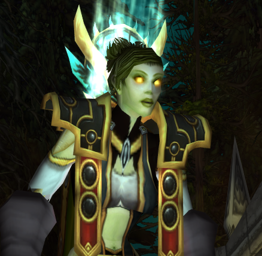

|  |
- Level: 60
- Klasse: Priest
- Main
Gear
| Head |
Halo of Transcendence |
| Neck |
Animated Chain Necklace |
| Shoulder |
Mantle of Prophecy |
| Back |
Hide of the Wild |
| Chest |
Truefaith Vestments |
| Wrists |
Bindings of Transcendence |
| Legs |
Leggings of Transcendence |
| Feet |
Omnicast Boots |
| Hands |
Hands of the Exalted Herald |
| Waist |
Girdle of Prophecy |
| Trinkets |
Second Wind, Royal Seal of Eldre'Thalas |
| Rings |
Cauterizing Band, Fordring's Seal |
| Main-Hand |
Benediction |
| Ranged |
Bonecreeper Stylus |
|
Presteskapet er min main. Hun er en Holy Priest og er medlem i guildet Leirskole der hun raider som healer. Hobbyene hennes varierer fra å plukke blomster og fiske til å skjenke Tauren warriers fulle og ta et jafs av dem.